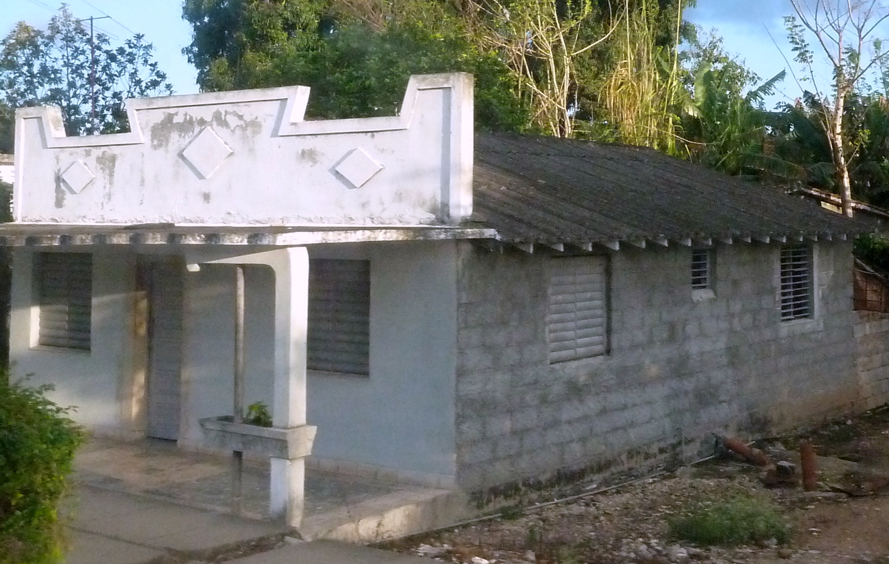

Bloques de concreto, tipo desconocido [CB99]
Está claro que la unidad de mampostería es un bloque de concreto, pero el tipo de bloque es desconocido. Los bloques pueden estar ocultos , o puede que no sea posible determinar sólido de blockwork hueco, o información al respecto está disponible.

Varios tipos de bloques de concreto, Peru (S. Brzev)

Construcción de bloques de concreto, Cuba (S. Brzev)